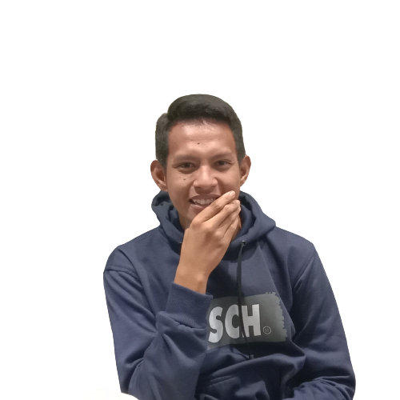

Hai Semua....
Saya Naufal Al Muwaffaq
Saya Naufal Al Muwaffaq, biasanya di panggil Naufal, saya berasal dari desa paciran Kabupaten Lamongan Provinsi Jawa Timur, Lahir tanggal 16 April 2002 saya sekarang melanjutkan pendidikan di salah satu Universitas di Malang yakni Universitas Brawijaya dengan Program Studi Teknik Informatika. Saya sekarang menekuni di salah satu bidang grafis yakni Design Grafis dan juga sekarang saya mulai tertarik untuk belajar UI/UX Designer. Hobi saya yakni Olahraga dan Design Grafis.

|
|